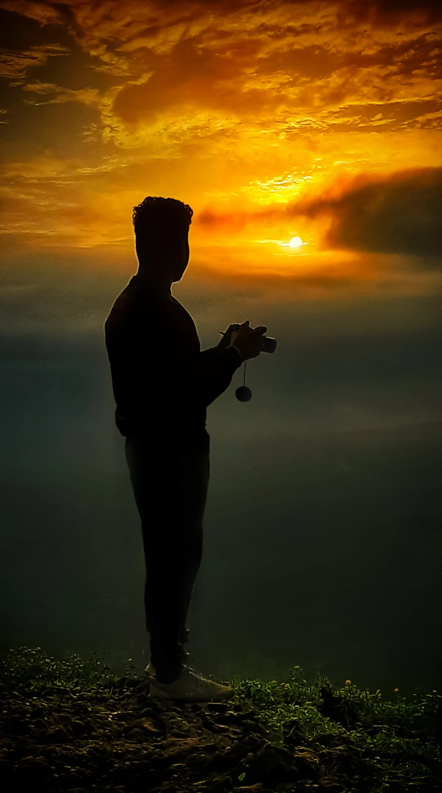

TRAVEL · STREET · PORTRAITS
The Wandering Eye
Seeing places. Feeling moments. Keeping the journey.
Explore the work ↓A visual journal
Photography shaped by movement, light, and the moments that make a place feel alive.
Selected work
From the road
A growing collection of places, landscapes, and passing moments.
About
The world is always moving. I try to notice.
The Wandering Eye is a personal photography journal built around travel, street life, and portraits. I’m interested in the quiet details — changing light, unfamiliar roads, ordinary people, and the brief moments that become memories.
This is the beginning of the archive. More journeys, stories, and photographs will find their way here.
Contact
Have a story, place, or journey in mind?
saurabhsds13@gmail.com ↗Replace this email and the Instagram link below with your real details.
Instagram ↗